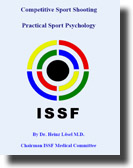

Competitive Shooting - Practical Psychology

The 84-page book is in PDF format and may be accessed by clicking
on the cover of the booklet to the right.


The 84-page book is in PDF format and may be accessed by clicking
on the cover of the booklet to the right.